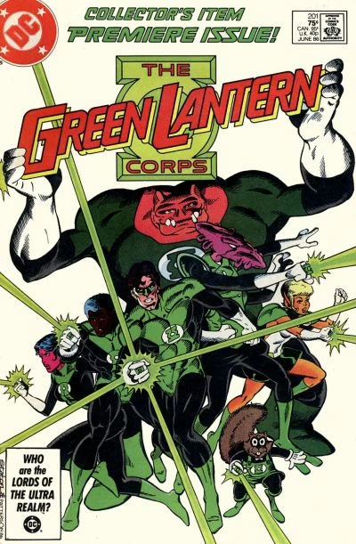

Este guia é uma compilação de informações sobre os quadrinhos do Lanterna Verde, incluindo as principais sagas e eventos. Abaixo estão listadas as sagas mais importantes e suas respectivas edições.
O primeiro Lanterna Verde foi Alan Scott, que apareceu pela primeira vez em 1940 na revista All American Comics #16 e escrito pelo roteirista Bill Finger, neste período que foi publicada essa história, se chamava Era de Ouro, onde surgiram os primeiros heróis fantasiosos das histórias em quadrinhos durante a Segunda Guerra Mundial, que durou de 1938 até 1956.
Esse Lanterna Verde era um membro da Sociedade da Justiça da América, e seu poder era baseado em uma lanterna mágica e um anel que lhe concedia habilidades especiais. Alan Scott é considerado o primeiro Lanterna Verde, mas não fazia parte do mesmo universo do Hal Jordan, que é o Lanterna Verde mais conhecido, sendo o Allan da terra 2 e o Hal da terra 1.
O Lanterna Verde Hal Jordan, criado por John Broome e Gil Kane, fez sua primeira aparição na Era de Prata em 1959 na revista Showcase #22, reformulando o personagem por completo. Hal Jordan é um piloto de testes da Terra que se torna o portador do anel de poder dos Lanternas Verdes, uma força policial intergaláctica. Ele é conhecido por sua coragem, determinação e habilidade em usar o anel para criar construções de energia verde. Hal Jordan é um dos personagens mais icônicos da DC Comics e se tornou um dos principais membros da Tropa dos Lanternas Verdes.
Guy Gardner é outro Lanterna Verde que apareceu pela primeira vez na Era de Prata, em 1968, na revista Green Lantern #59. Ele é conhecido por sua personalidade impulsiva e muitas vezes arrogante, o que o torna um personagem controverso. Guy Gardner é um dos Lanternas Verdes mais conhecidos e teve várias histórias solo ao longo dos anos.
John Stewart é outro Lanterna Verde importante, que fez sua primeira aparição em 1971 na revista Green Lantern #87. Ele foi criado por Dennis O'Neil e Neal Adams como o primeiro Lanterna Verde afro-americano. John Stewart é um arquiteto e ex-fuzileiro naval que se torna um Lanterna Verde e é conhecido por sua inteligência e habilidades estratégicas. Ele também se tornou um membro importante da Liga da Justiça.
Após a saga Crise nas Infinitas Terras, a DC havia decidido que seu universo seria reiniciado de forma mais simples, para uma nova geração de leitores
A saga "Amanhecer Esmeralda" (Emerald Dawn) foi uma minissérie publicada em 1989 que reconta a origem de Hal Jordan como Lanterna Verde. Escrita por Keith Giffen e desenhada por M.D. Bright. Amanhecer Esmeralda trata de recontar a origem do homem que viria a se tornar o maior de todos os Lanterna Verdes. Na história vemos como o piloto de testes Hal Jordan foi escolhido para ser o portador da maior arma do universo, seu primeiro contato com os Gurdiões de Oa, seu treinamento com Killowog, e o início da relação com seu amigo e futuramente maior inimigo, Sinestro.
A minissérie "Amanhecer Esmeralda II" (Emerald Dawn II) foi publicada em 1992 e é uma sequência direta da primeira minissérie. Escrita por Keith Giffen e desenhada por M.D. Bright, a história continua a explorar a origem de Hal Jordan como Lanterna Verde e seu papel na Tropa dos Lanternas Verdes.

A pós o sucesso da série do Lanterna verde, Hal Jordan, a DC Comics decidiu expandir o universo dos Lanternas Verdes e introduzir a Tropa dos Lanternas Verdes como uma organização intergaláctica. A série "Green Lantern Corps" foi lançada em 1986 como uma segunda revista mensal, apresentando outros Lanternas Verdes e suas histórias. A Tropa dos Lanternas Verdes é composta por seres de diferentes planetas que são escolhidos para se tornarem Lanternas Verdes, cada um com seu próprio anel de poder e responsabilidades.
A série "Green Lantern" foi relançada em 1990 com Hal Jordan como o protagonista. A nova série foi escrita por Gerard Jones e desenhada por vários artistas, incluindo Pat Broderick e M.D. Bright. A série continuou a explorar as aventuras de Hal Jordan como Lanterna Verde e sua luta contra vilões icônicos, como Sinestro e Parallax.
Nesta Edição do Superman #80, se passa na saga "O Retorno do Superman" e também o início da saga "Crepúsculo Esmeralda" onde Coast City (cidade de Hal Jordan) é destruida por Mongul e o Superciborg. Hal Jordan começa a passar um dos momentos mais sombrios de sua vida, passando por um colapso emocional e psicológico.
A saga "Crepúsculo Esmeralda" (Emerald Twilight) foi publicada em 1994 e é uma das histórias mais icônicas do Lanterna Verde. Escrita por Ron Marz e desenhada por Darryl Banks, a história mostra Hal Jordan se tornando Parallax um dos vilôes mais icônicos da DC a pós a destruição de Coast City, e tenta obter o poder dos Lanternas Verdes para ressuscitar sua cidade natal.